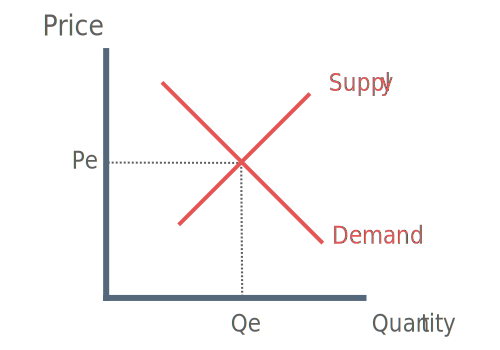
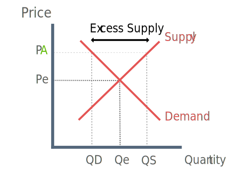
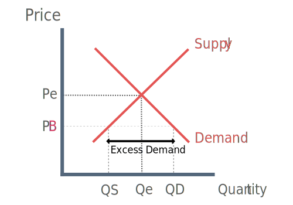
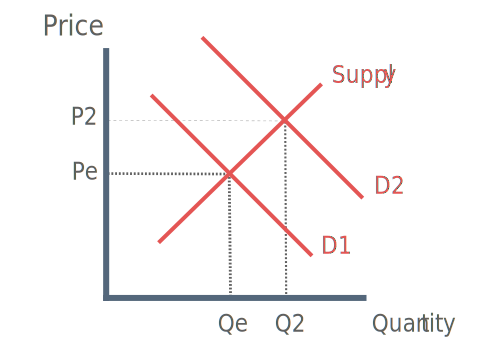
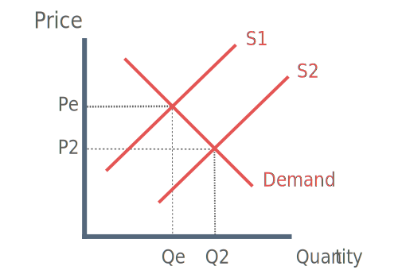

What is Market Equilibrium?
Equilibrium is a state of balance.
A market is in equilibrium when demand is equal to supply, in other words demand and supply are balanced.
Combining everything we have learn’t so far, we know the demand curve slopes downwards and the supply curve slopes upwards. If we put the two together together we get a single point where demand equals supply.
How is Market Equilibrium Established?
Market equilibrium is established when the quantity consumers want to buy (Quantity Demanded) is equal to the quantity producers want to sell (Quantity Supplied).

This will only be reached at a single price (Pe) at which both consumers and producers agree.
At this point all consumers who are willing to buy the good can find the good and all producers willing to supply the good are able to find consumers. All the supply is sold and all demand is satisfied. This is shown at Qe.
Disequilibrium
Disequilibrium arises when the demand price is not equal to supply price and quantity demanded is not equal to quantity supplied.
In other words the market is not in equilibrium because demand and supply are not balanced.
There are two ways disequilibrium can occur:
Price is above market equilibrium price - Excess supply
Price is below market equilibrium price - Excess demand
Price Above Equiliubrium - Excess Supply:
If price is above equilibrium than the market will be in disequilibrium.

Looking at the diagram, when the price is at PA, but the equilibrium price is Pe then quantity demanded will be at QD and quantity supplied will be at QS. Demand and supply are not equal to each other.
In this case we say there is an excess supply, because quantity supplied is greater than quantity demanded. We could also say that producers are looking to sell more (because price is higher) than consumers are willing to buy - hence the ‘excess’ in there term excess supply.
Price Below Equilibrium - Excess Demand:
If price is below equilibrium price then the market will also be in disequilibrium.

Looking at the diagram when the price is at PB, but the equilibrium is Pe, Quantity demanded will be at QD and quantity supplied at QS.
In this case we say there is excess demand, the quantity demanded by consumers is greater than quantity supplied by producers. In simpler terms, buyers are looking to buy more (because price is lower) than producers are willing to sell - hence ‘excess’ in excess demand.
Moving to a New Equilibrium
In the previous tutorials we looked at how the demand and supply curves could shift is there was a change in a non-price factor.
When one of the curves shift the market adjusts to restore equilibrium, we simply move to another market equilibrium.
Increase in Demand:

A change in an underlying factor of demand has caused an increase in demand and the demand curve to shift outwards. The market establishes a new equilibrium at the price P2 and the quantity Q2.
This has lead to a a rise in the equilibrium price, a rise in equilibrium quantity and an expansion of market supply.
Increase in Supply:

A change in an underlying factor of supply has caused an increase in demand and the supply curve to shift outwards. The market establishes a new equilibrium at the price P2 and the quantity Q2.
This has lead to a fall in the equilibrium price, a rise in equilibrium quantity and an expansion of market demand.
Summary Table of Curve Shift Effects:
| Change |
Equilibrium Price |
Equilibrium Quantity |
| Supply Increase |
Lower |
Higher |
| Supply Decrease |
Higher |
Lower |
| Demand Increase |
Higher |
Higher |
| Demand Decrease |
Lower |
Lower |